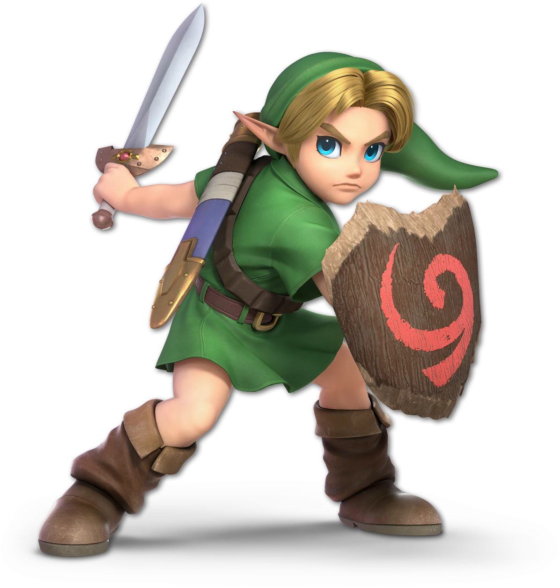

About Link
Link is a brave guy trying to save the princess - Zelda - from Ganon. (Parenthetically he also saves the whole world)

Links
Link has appeared in many different games (and other media). The following is just a small list of all those games: